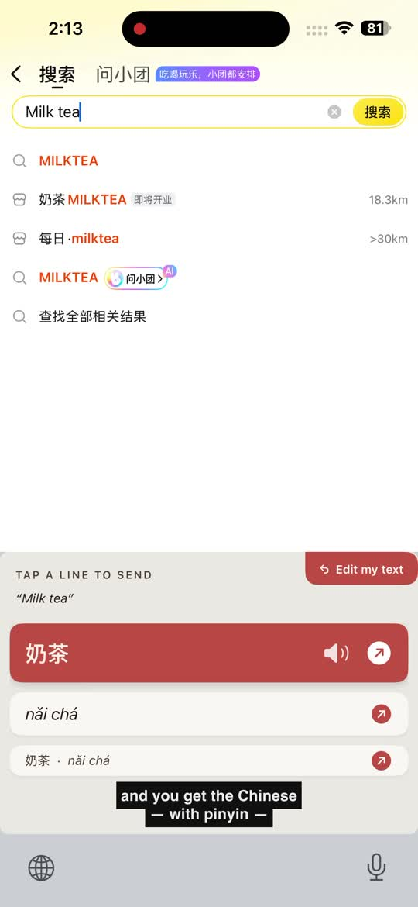
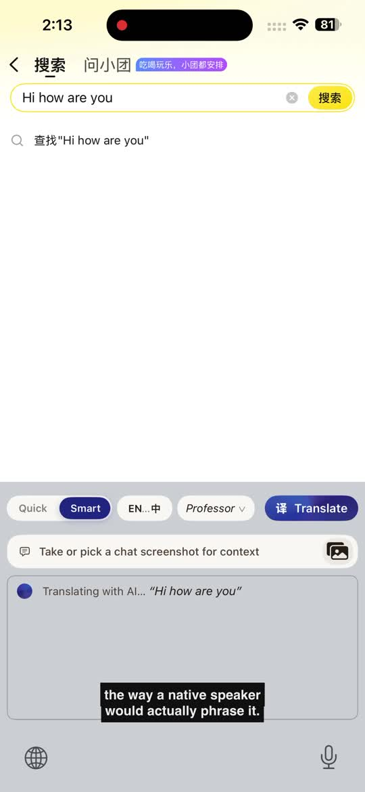

那个让人崩溃的循环——打开翻译、输入、复制、切回微信、粘贴、发现翻得很机械、再回去改、再复制…Nuance 是 iOS 键盘，翻译就在你正在用的 App 里完成。选一个语气，直接发送。
跨语言聊天意味着同时玩两个 App。更糟的是，翻出来的话往往像课本写的——不像一个人对朋友说话、对教授请教、或者跟客户沟通的那种说法。
翻译不只是字——还有语气、称呼、场景。机器直译能翻出意思，Nuance 能翻出语境。
打开微信、iMessage、邮件——任何输入框。正常地用英文（或中文）打字。
长按地球键，选「Nuance」。键盘上方会出现翻译条。
朋友、教授、商务。Nuance 写出母语者会用的说法，一键插入。
使用 Apple 的本地翻译框架——完全离线、零网络、零账号。下载语言包后即可离线使用。适合短消息、菜单、路牌。

AI 翻译会根据语气、称呼、场景调整。前 10 次免费。之后可以填一份一分钟的应用内反馈表解锁，或在设置里填入你自己的 API key。

我在清华读书，每天大约要发四十条跨语言的消息。受够了来回切 Google 翻译、复制、粘贴，看着教授读到一句明显像机器写的话。
Nuance 就是我自己想要的那个键盘。如果它帮到你——或者没帮到你——欢迎在 App 里告诉我：设置 → 分享反馈。
是的。快速模式（本地翻译）永久免费。智能模式（AI 语气感知）前 10 次免费使用内置 key。之后可以填一份一分钟的应用内反馈表解锁，或者在「设置 → 翻译 key」里填入你自己的 AI 翻译 API key，自己承担费用。
不收集个人数据。快速模式完全在你的手机本地运行——零网络流量。智能模式只在你点「翻译」时，把那段文字通过 HTTPS 发送到第三方 AI 翻译服务，对方完成后丢弃。没有账号、没有登录、没有邮箱。详见隐私政策。
快速模式通过 Apple Translation 支持 30+ 种语言对——西班牙语、法语、德语、意大利语、葡萄牙语、日语、韩语、中文（简繁）、阿拉伯语、俄语、荷兰语、波兰语、土耳其语、越南语、泰语、印尼语等。智能模式支持模型认识的任何语言对。
暂时只有 iPhone（iOS 18+）。短期内不计划做 Android——做这种 UX 的原生 iOS 键盘已经把所有时间都花进去了。如果需求够强烈，会重新评估。
iOS 要求任何会发起网络请求的键盘开启「允许完全访问」（智能模式需要联网）。开关在「设置 → 通用 → 键盘 → 键盘 → Nuance」。我们不记录键盘输入——只有你明确点「翻译」的文字才会被发送。快速模式不需要这个权限，因为它在本地运行。
一个人——安光宁，苏世民学者，在北京清华大学。一个人做的，专门为每天用三种语言发消息的人设计。功能建议和反馈：打开 Nuance → 设置 → 分享反馈。